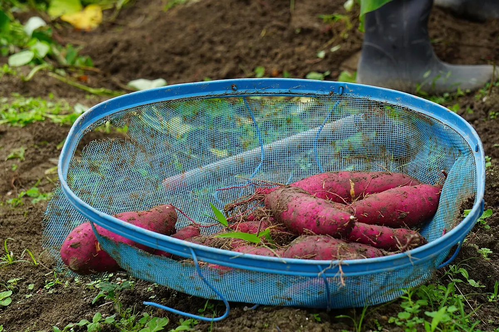
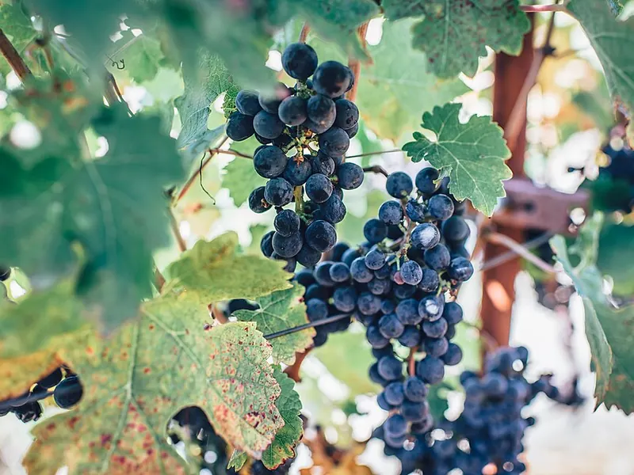

Photo credits
For now the site uses photos from Wikimedia Commons under the licences below. They have been cropped and resized. They will be replaced with photos from our own farm.
| Photo | Author | Licence | |
|---|---|---|---|
 | Alazani River 3.jpg | Amo Jazzme's Private Collection | CC BY 3.0 |
 | Sweet Potato Harvest at Kirby Farms (20130920-OC-LSC-0767).jpg | USDAgov | Public domain |
 | Sweet Potato Harvest at Kirby Farms (20130920-OC-LSC-1431).jpg | USDAgov | Public domain |
 | 20160923-AMS-LSC-0147.jpg | U.S. Department of Agriculture | Public domain |
 | Sweet Potato Harvest (37442144660).jpg | EDAWG117.JP | CC BY-SA 2.0 |
 | Solanum lycopersicum 'Brandywine Red' (tomato), ripe fruits on the plant (SaatPilot).jpg | Steffen Bauer (www.saatpilot.de) | CC BY 4.0 |
 | Fresh cucumbers.jpg | Halima Waziri | CC BY-SA 4.0 |
 | Red, Yellow, and Green bell peppers.jpg | Jiafei Slay Queen | CC0 |
 | Aubergine-Varianten.JPG | Grey Geezer | CC BY-SA 3.0 |
 | Harvest festival with pumpkins, Quebec, Canada.jpg | Marc-Lautenbacher | CC BY-SA 4.0 |
 | Autumn Red peaches.jpg | Jack Dykinga, USDA | Public domain |
 | A bunch of grapes on a vine.jpg | Ian Schneider on Unsplash | CC0 |